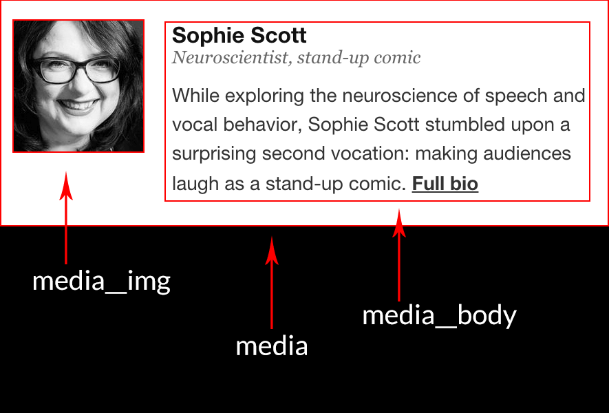
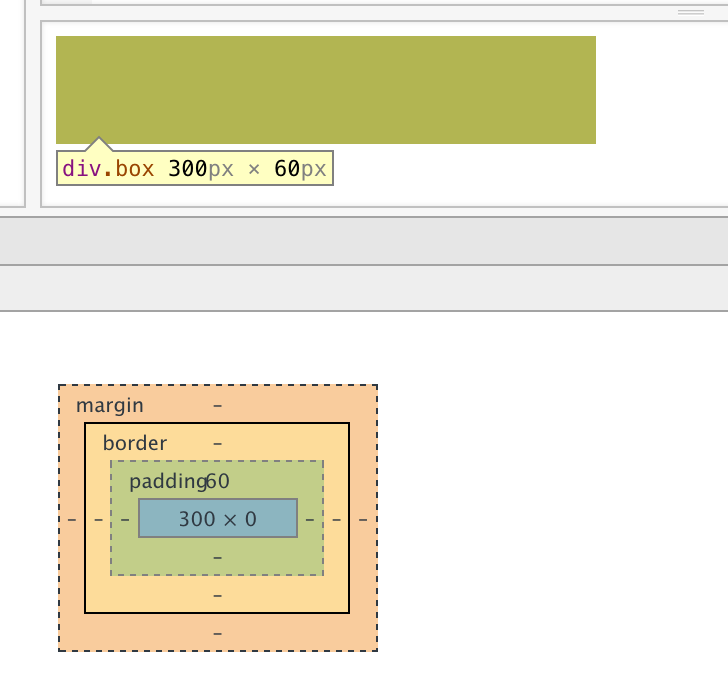
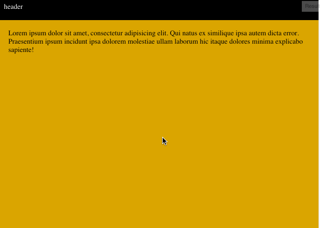

New School CSS
Black Hills Summit 2015
CSS can be frustrating
old school CSS hacks
CSS can be frustrating
new tools for old problems
plus some nifty tricks
vertical centering
old school
.parent {
display : table;
}
.vertically-center {
display: table-cell;
vertical-align: middle;
}
new school
.vertically-center {
position: relative;
top: 50%;
transform: translateY(-50%);
}
CSS transform
- IE9 and up
-webkit-and-ms-prefixes required*
* but you should automate that (autoprefixer)
full height elements
old school
body, html {
height: 100%;
}
.parent-of-full-height {
height: 100%
}
.full-height {
height: 100%;
}
new school
.full-height {
height: 100vh;
}
vh units
- IE9 and up
- iOS7 Safari can be buggy (but there's a fix)
- see also
vw,vmin,vmax
text in columns
old school
.left-column,
.right-column {
float: left;
width: 46%;
}
.left-column {
margin-right: 4%;
}
<div class="left-column">
<p>The last question was asked for the first time, half in jest, on May 21, 2061, at a time when humanity first stepped into the light. The question came about as a result of a five dollar bet over highballs, and it happened this way:</p>
<p>Alexander Adell and Bertram Lupov were two of the faithful attendants of Multivac. As well as any human beings could, they knew what lay behind the cold, clicking, flashing face -- miles and miles of face -- of that giant computer. They had at least a vague notion of the general plan of relays and circuits that had long since grown past the point where any single human could possibly have a firm grasp of the whole.</p>
<p>Multivac was self-adjusting and self-correcting. It had to be, for nothing human could adjust and correct it quickly enough or even adequately enough -- so Adell and Lupov attended the monstrous giant only lightly and superficially, yet as well as any men could. They fed it data, adjusted questions to its needs and translated the answers that were issued. Certainly they, and all others like them, were fully entitled to share In the glory that was Multivac's.</p>
</div>
<div class="right-column">
<p>For decades, Multivac had helped design the ships and plot the trajectories that enabled man to reach the Moon, Mars, and Venus, but past that, Earth's poor resources could not support the ships. Too much energy was needed for the long trips. Earth exploited its coal and uranium with increasing efficiency, but there was only so much of both.</p>
<p>But slowly Multivac learned enough to answer deeper questions more fundamentally, and on May 14, 2061, what had been theory, became fact.</p>
<p>The energy of the sun was stored, converted, and utilized directly on a planet-wide scale. All Earth turned off its burning coal, its fissioning uranium, and flipped the switch that connected all of it to a small station, one mile in diameter, circling the Earth at half the distance of the Moon. All Earth ran by invisible beams of sunpower.</p>
</div>
text in columns
new school
.content {
columns: 2;
column-gap: 50px;
}
<div class="content">
<p>The last question was asked for the first time, half in jest, on May 21, 2061, at a time when humanity first stepped into the light. The question came about as a result of a five dollar bet over highballs, and it happened this way:</p>
<p>Alexander Adell and Bertram Lupov were two of the faithful attendants of Multivac. As well as any human beings could, they knew what lay behind the cold, clicking, flashing face -- miles and miles of face -- of that giant computer. They had at least a vague notion of the general plan of relays and circuits that had long since grown past the point where any single human could possibly have a firm grasp of the whole.</p>
<p>Multivac was self-adjusting and self-correcting. It had to be, for nothing human could adjust and correct it quickly enough or even adequately enough -- so Adell and Lupov attended the monstrous giant only lightly and superficially, yet as well as any men could. They fed it data, adjusted questions to its needs and translated the answers that were issued. Certainly they, and all others like them, were fully entitled to share In the glory that was Multivac's.</p>
<p>For decades, Multivac had helped design the ships and plot the trajectories that enabled man to reach the Moon, Mars, and Venus, but past that, Earth's poor resources could not support the ships. Too much energy was needed for the long trips. Earth exploited its coal and uranium with increasing efficiency, but there was only so much of both.</p>
<p>But slowly Multivac learned enough to answer deeper questions more fundamentally, and on May 14, 2061, what had been theory, became fact.</p>
<p>The energy of the sun was stored, converted, and utilized directly on a planet-wide scale. All Earth turned off its burning coal, its fissioning uranium, and flipped the switch that connected all of it to a small station, one mile in diameter, circling the Earth at half the distance of the Moon. All Earth ran by invisible beams of sunpower.</p>
</div>
CSS columns
- IE 10 and up
- some advanced features not fully supported
in webkit, but workarounds exist - needs
-moz-and-webkit-prefixes* - falls back nicely to a single column
* are you automating this yet?
equal height columns
old school
display: table- hard stop gradient backgrounds
- set height with JavaScript

new school
.row {
display: flex;
}
/* flex-direction: row;
is default behaviour */
flexbox
- IE 9 and up
- needs
-ms-and-webkit-prefixes - solves a lot of classic layout problems:
see Solved by Flexbox
https://css-tricks.com/snippets/css/a-guide-to-flexbox/
clearfix
old school
.clearfix:after {
content: "";
display: table;
clear: both;
}
new school
.element-with-floats {
overflow: hidden;
}
clearfix
old school
.clearfix:after {
content: "";
display: table;
clear: both;
}
new school
flexbox!
the media object
(overflow hidden clearfix)
 further reading
.media {
overflow: hidden;
}
.media__img {
float: left;
margin-right: 10px;
}
.media__body {
overflow: hidden;
}
fluid iframes
old school
iframe {
width: 100%;
}new school
.iframe-container {
position: relative;
padding-top: 56.25%; /* 9/16 */
}
iframe {
position: absolute;
top: 0;
left: 0;
width: 100%;
height: 100%;
}intrinsic ratio
let's play guess
the computed padding
hint: it's not 20px
.box {
width: 300px;
height: 100px;
padding-top: 20%;
}
intrinsic ratio
=
vertical padding
+
element with zero height

mixing pixels and percentage
old school
.center-me {
position: absolute;
width: 10px;
left: 50%;
margin-left: -5px;
}
new school
.center-me {
position: absolute;
width: 10px;
left: calc(50% - 5px);
}
mixing pixels and percentage
old school
.full-background {
width: 100%;
background: red;
}
.container {
width: 1170px;
margin: 0 auto;
}
new school
.full-background {
width: 100%;
background: red;
padding: 0 calc(50% - 585px);
}
/* (100% - 1170px)/2 */
(assuming you're using
box-sizing: border-box)
CSS calc
- IE9 and up*
- * just not for
background-positionin IE9 - old Android browsers can only add and subtract
CSS calc
use with any of your favourite CSS units!

.header {
height: 50px;
position: fixed;
}
.full-panel {
padding: 20px;
height: calc(100vh - 50px);
}